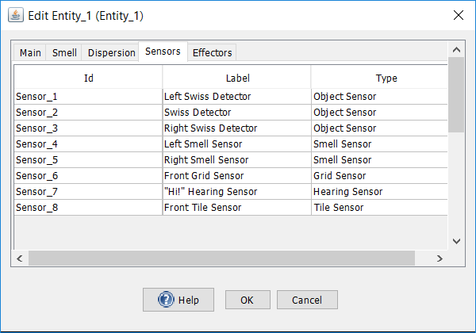
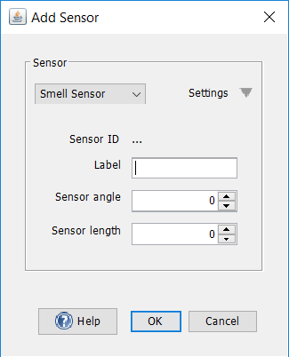
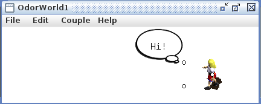
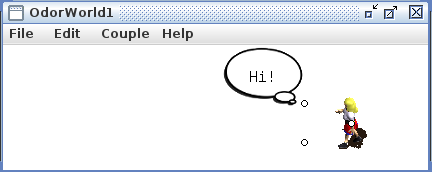
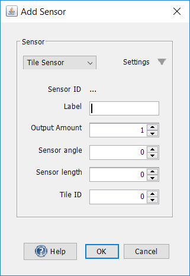

Sensors
Organisms have sensors that activate cells in their brains. An agent in Odor World also has sensors that it uses to receive information from its environment. These sensors can be coupled with input neurons in neural networks so that a neuron fires each time a sensor gets activated.
To display an agent's sensors, double click on the agent to display the entity dialog and select the sensors tab. The sensor panel lists all of an agent's sensors along with its sensor type and label. Here is an example of the dialog, for an agent with three smell sensors:

To edit a sensor, right click on any part of the row and select "Edit Sensor..."
Labels can be renamed by double clicking on the label column.
To delete a sensor, select all the sensors to be deleted in the list and click on the "Delete" button at the bottom of the panel.
To add a sensor, click on the "Add" button at the bottom of the panel. Then, select the sensor type and input the appropriate parameters.
The different types of sensors in Odor World are described below.
Objects in Odor World can emit smells that smell sensors can detect. See the objects and smell sources page for more details on how smell vectors and sensor vectors work, and how they can be used in couplings.
Each agent in an Odor World by default has three smell sensors: a left whisker, a central sensor, and a right whisker. The left and right whiskers shoot off symmetrically from this center of perspective of the agent at an angle determined by the parameter Sensor angle, denoted by θ, which is in degrees.

Additional smell sensors can be added using the add smell sensor dialog.

Smell sensors can also be edited by double clicking on them in the sensor panel. These properties can be edited:
Sensor angle: The angle at which the smell sensor will be added. A sensor angle of 0 a smell sensor that is directly in front of the agent. A positive sensor angle locates the sensor at a position to the left of the agent's heading. A negative sensor angle locates the sensor at a position to the right of the agent's heading.
Sensor length: The distance from the center of the entity to which the smell sensor is to be added. A sensor length of 0 makes sensor angle irrelevant since located at the center of the agent.
A Hearing sensor listens for a Speech effector which says the same word that the hearing sensor listens for. When a hearing sensor is activated by a speech effector, a thought bubble containing the associated utterance is displayed in Odor World. See the workspace bischof.zip for an implementation of hearing.
 

Utterance: The string or phrase associated with this sensor. Hearing sensors get activated when it senses a speech effectors of the same utterance.
Output Amount: The amount of activation to be sent to a neuron coupled with this sensor.
A place cell is a cell that fires when an organism senses that it is in a particular location associated with that cell. An input neuron coupled with a tile sensor mimics the behavior of a place cell. When an agent is located inside a tile, its corresponding tile sensor gets activated. See the script actor-critic.bsh for an implementation of tile sensors in action.

Activation amount: Amount of activation that a neuron coupled with the tile sensor receives when the tile sensor is activated.
X and Y: Coordinates for the location of the top-left corner of the tile sensor.
Width and Height: Determines the size of the tile. Width specifies the horizontal length of the tile sensor. Height specifies the vertical length.
A grid of tile sensors can quickly be added by selecting tile set in the sensor type menu. The newly added grid will be the same size as the current size of the visible Odor World window.

Rows:The number of rows of tile sensors to add. The width of each tile will equal the width of the Odor World window divided by the number of rows.
Columns:The number of columns of tile sensor to add. The height of each tile will the height of the Odor World window divided by the number of columns.
Offset: Sets the X and Y coordinates where the top-left corner of the grid will be located.
Two sensor-like entity attributes that are invisible by default in the attribute visibility panel of the coupling manager (on the producer side) are its x and y location. These producers can be sent to neuron consumers and can in that sense be thought of as the result of "position sensors" on an agent.